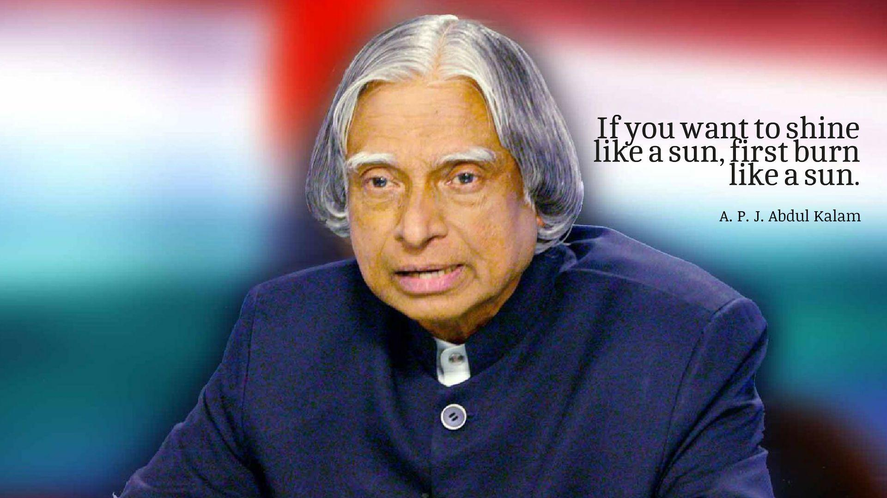

Dr. A . P . J ABDUL KALAM
1931 - 2015

Avul Pakir Jainulabdeen Abdul Kalam (15 October 1931 – 27 July 2015) was an Indian aerospace scientist who served as the 11th President of India from 2002 to 2007.He was born and raised in Rameswaram, Tamil Nadu, and studied physics and aerospace engineering. For the next forty years, Kalam focused on science and administration, notably at the Defence Research and Development Organisation (DRDO) and the Indian Space Research Organisation (ISRO). He played a vital role in India's civilian space program and military missile development, earning the nickname "Missile Man of India" for his contributions to ballistic missile and launch vehicle technology. Additionally, he held important roles during India's Pokhran-II nuclear tests in 1998, marking a crucial milestone in the country's nuclear capabilities.